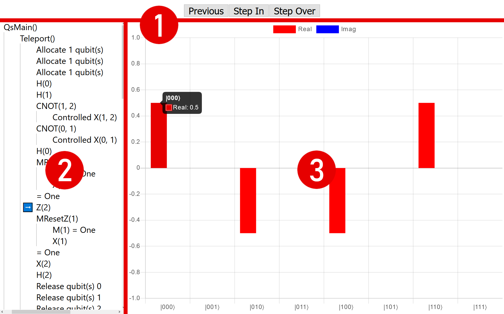
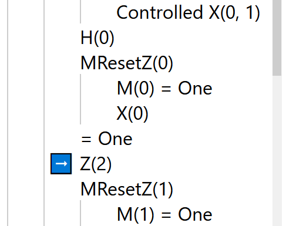

Visualizing quantum state with Q#
A great thing you can do with quantum simulators that you can’t do with a real quantum computer is peek inside at the quantum state. Why would you want to do this? Well, often in the course of developing a quantum program, something goes wrong, and it’s helpful to inspect the quantum state to try to find where the problem is, much like you would add print statements to debug a classical program. Or perhaps nothing is wrong, but you want to trace the execution of a quantum algorithm for demonstration purposes.
When you want to look at the quantum state of a Q# program, the easiest way is to use DumpMachine or DumpRegister. These functions show you a little table like this on the console:
# wave function for qubits with ids (least to most significant): 0;1;2
∣0❭: 0.098409 + -0.025128 i == * [ 0.010316 ] \+ [ -0.25000 rad ]
∣1❭: 0.165898 + -0.042361 i == * [ 0.029316 ] \+ [ -0.25000 rad ]
∣2❭: 0.335400 + -0.085642 i == *** [ 0.119828 ] \+ [ -0.25000 rad ]
∣3❭: 0.565417 + -0.144375 i == ******* [ 0.340540 ] \+ [ -0.25000 rad ]
∣4❭: 0.098409 + 0.025128 i == * [ 0.010316 ] /- [ 0.25000 rad ]
∣5❭: 0.165898 + 0.042361 i == * [ 0.029316 ] /- [ 0.25000 rad ]
∣6❭: 0.335400 + 0.085642 i == *** [ 0.119828 ] /- [ 0.25000 rad ]
∣7❭: 0.565417 + 0.144375 i == ******* [ 0.340540 ] /- [ 0.25000 rad ]This table is nice. It has all the information you could want to know about the state vector, and it’s easy to add a call to DumpMachine anywhere you want to know what the quantum state is at some particular point in your program. But it’s not especially convenient if you want to see how the state changes over time. You would end up with a bunch of separate tables printed out on the console and have to stitch them together on your own. Plus, it would be nice to have a more visually appealing way of showing the state vector that isn’t limited to console graphics.
Let’s take this idea—printing a snapshot of the quantum state at specific points—and run with it. We can call DumpMachine continuously, after every step, and animate the transitions between states. We can also remember all of the previous states and show them in a timeline so you can jump back and forth, making it easy to compare the quantum state at any two points in time.

This is what the Q# State Visualizer, one of the samples in the in the Microsoft Quantum Development Kit samples repository, does. I worked on it over the summer as part of my internship at Microsoft. This post doubles as a quick guide on how to use the state visualizer and an explanation of how it works.
Setting up the visualizer
The first step is to clone the QDK samples repository and go to the samples/runtime/state-visualizer folder. There’s a README there that will tell you what you need to do to get started, but the gist of it is that the state visualizer is a web app, so you need Node.js to build the front-end and .NET Core SDK to run the back-end. Once you have the visualizer open in your web browser, you’re done with setup!
Using the visualizer
The visualizer comes with an example that runs a quantum teleportation circuit followed by Grover’s search algorithm, so you can get started right away without having to use your own Q# program. But you can also run your own code by changing the Program.qs file to whatever you want—just restart the visualizer to run the new code!
Here’s an overview of the visualizer’s features.

1. Navigation
The buttons at the top of the screen are similar to what you would see in a debugger: you can either step in to the current operation and go through all of its calls to other operations one-by-one, or you can choose to step over them and skip straight to the operation that will run after the current operation finishes.
There’s also one button that you don’t usually see in debuggers: a button that lets you go back to the previous operation so you can look at what the quantum state used to be.
2. Timeline

The timeline on the left side shows all of the operations that have finished, are currently running, or are about to start. The lists are nested so operations that are called by another operation are shown as indented below the parent operation. The blue arrow points to the operation that’s going to run next. When an operation returns something other than unit, the return value is shown after an equals sign.
A neat feature of the timeline is that you can click on any operation in it to jump directly to the quantum state at that point in the program. This makes it really easy to see directly the differences in the quantum state between any two points in time.
For technical reasons that I’ll explain in the next section, the timeline only shows Q# operations, not functions.
3. Quantum state
The largest part of the screen is taken up by the quantum state itself. It’s a bar chart that shows the amplitude of each basis vector, with the basis vector labels shown at the bottom. The real parts of the amplitude are red and the imaginary parts are blue. (The examples here happen to only have real amplitudes, so there are only red bars. Also, unlike DumpMachine, which has bars that show probability instead of probability amplitude, these bars can be negative, so the vertical axis ranges from -1 to +1.) You can mouse over a bar to see the its precise decimal value instead of relying on the tick marks.
Behind the scenes
So how does the state visualizer work?
The Q# quantum simulator has several events that can be used to track the execution of a Q# program: OnOperationStart, OnOperationEnd, OnAllocateQubits, OnBorrowQubits, OnReleaseQubits, and OnReturnQubits. So the state visualizer runs a program using the quantum simulator, like you would normally, but with event handlers that wait for these events to happen. When they do, the event is sent to the web client along with a snapshot of the quantum state (made using the StateDumper class), which the client then displays in the browser.
A consequence of relying on the quantum simulator for events is that the state visualizer has no knowledge of finer-grained information that you might expect from a full-fledged debugger, like which functions are being called, which line of code is being executed, or non-quantum state like the values of local variables.
Future steps
There are a couple directions you could go in to make the state visualizer better.
The UI has some room for improvement. I can think of a few small changes that would be nice to have, like making the timeline resizable, or being able to collapse operations with children in the timeline. There could also be more options for how the quantum state is displayed, like showing probabilities instead of probability amplitudes, or even other kinds of visualizations besides a bar chart. The current visualization also uses color to distinguish between the real and imaginary parts, which may be an issue for users with color blindness.
It would also be cool to add more debugger-like features to the visualizer (like the ones I mentioned in the previous section that aren’t possible with the current design). Instead of making the web app more like a debugger, it might be better to make Q# debuggers for existing IDEs that include state visualization.
As always, feel free to fork the QDK samples repository and submit pull requests for the state visualizer if you’ve made any improvements!
This post is part of the 2019 Q# Advent Calendar.